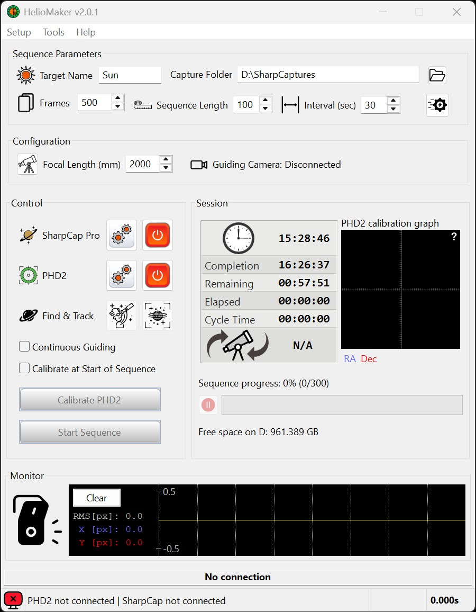
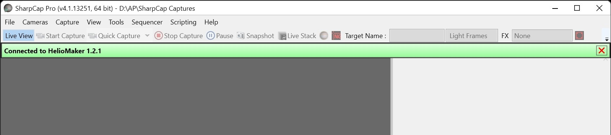
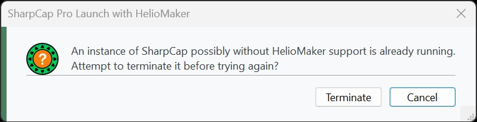
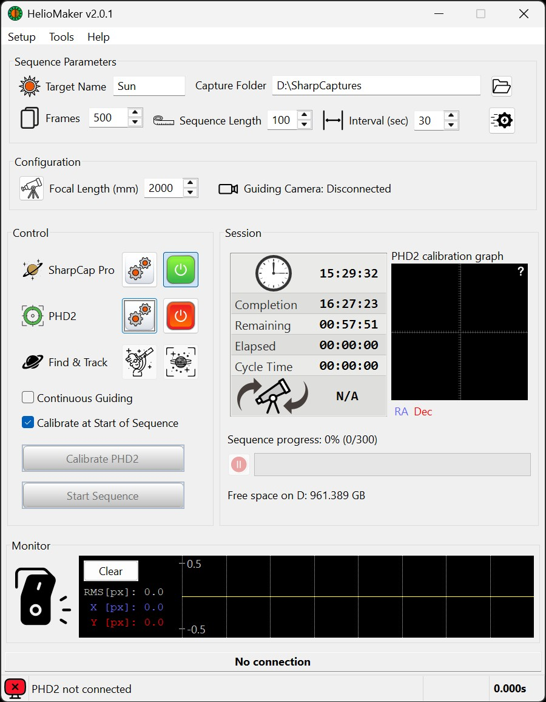
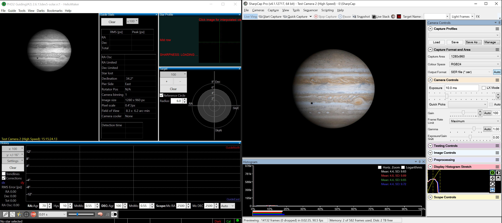

Assuming the user has activated the HelioMaker license, installed SharpCap Pro with its own active license, and installed and configured the custom PHD2 version using the respective configuration dialogs as described earlier, it is now time to test if the system has been properly configured.

To launch SharpCap Pro and connect it with HelioMaker:

If you previously launched SharpCap Pro outside of HelioMaker and then attempt to connect to it from HelioMaker, a warning prompt will appear. If you choose to proceed, HelioMaker will attempt to close SharpCap Pro and reopen it to establish communication, ensuring proper connection between the two programs.


Assuming that SharpCap Pro has been successfully connected, proceed with connecting the custom version of PHD2 required by HelioMaker:
When PHD2 is fully initialized and HelioMaker establishes a control channel over it:

If you have configured a specific SharpCap camera and selected a specific PHD2 equipment profile in the HelioMaker configuration, now is the time to check in each program whether your settings are properly loaded.
For instance, if you have successfully connected all the required components and have chosen the "Virtual Planetary Camera" in PHD2, you should see PHD2 continuously taking (looping) exposures. In this scenario, the image displayed in the PHD2 main window should match the live view captured in SharpCap Pro. However, keep in mind that the frame refresh rate in PHD2 will be much lower compared to SharpCap Pro, which is normal and expected.
If your PHD2 profile uses a different camera (not the "Virtual Planetary Camera"), the image you see in the PHD2 main window will directly reflect the view captured by that particular camera. Open HelioMaker's Find & Track tool and verify that it also shows a continuously updating view from the PHD2 camera. Test the intended detection mode while PHD2 is looping, before starting calibration or guiding. Planetary and Surface Features modes require an active HelioMaker license.
If HelioMaker reports that the physical-camera detection link is unavailable, PHD2 remains usable with its own built-in detector for that session, but Find & Track will not show live frames from that camera. Confirm that the current custom PHD2 version is installed, that HelioMaker is connected to the intended PHD2 instance, and that the two programs are running at compatible permission levels.
The sample image below shows a screenshot of SharpCap Pro configured with "Test Camera 2 (High Speed)" using a simulated Jupiter image as the source, alongside PHD2 connected to the "Virtual Planetary Camera" and displaying the same Jupiter image. Note that PHD2 includes gamma correction slider that can be adjusted for optimal viewing. This example demonstrates how the "Virtual Planetary Camera" allows the camera used by SharpCap Pro to be effectively shared with PHD2 and HelioMaker.
